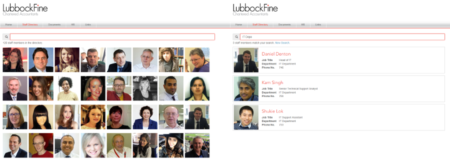

Built using the Dashing dashboard framework this helpdesk screen pulls ticket information from Zendesk and displays the network monitoring output.
Sometimes a simple mockup helps stakeholders clarify their ideas and ensures that everyone is on the same page. This is a mockup I produced whilst negotiating a joint venture with a software company to produce a client portal for the accountancy sector.
Built using Flask-Admin for a financial services firm this simple client management database is linked to a Document Management System and creates / updates client folders.
I get a lot of calls from prospective suppliers. This small application is triggered when I receive a call and automatically Googles the phone number.
The business grew and no one knew who anyone was. This is a simple staff directory that pulls in user information from a flat file and allows users to search for staff using any of the profile information.
This application (written in VBA to take advantage of an Excel library) takes a large mail merge document, splits it up into the component letters, uses RegEx to work out where to file the letter and then files each letter into a document management system (imanage Worksite) saving hours of admin.
The company name needs to be displayed at registered offices. This display rotates through a list of 350 company names and updates periodically from a central database.